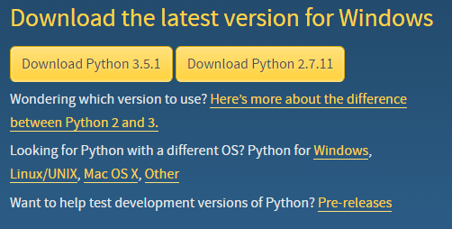

|
Nesta aula estudaremos como fazer o download do Python, qual versão escolher, e como realizar a instalação do Python no Windows. |
MÁQUINA VIRTUAL PYTHON
O Python é composto por um conjunto de bibliotecas e um arquivo executável, no caso, o interpretador da linguagem Python. Quando instalamos o Python em nosso computador, o que fazemos de fato, é instalar um programa que executa código Python e adicionar, no Path do sistema, o local em que o interpretador da linguagem Python está contido.
O programa executável do Python, isto é, o interpretador, é também chamado de Máquina Virtual do Python . A expressão Máquina Virtual é decorrente do fato que o programa Python propriamente dito, executa instruções que juntas, formam programas, e essas instruções são executadas pelo interpretador de maneira análoga as instruções de arquivos executáveis que são executadas pelo Computador.
BAIXANDO E INSTALANDO O PYTHON
O Python é distribuido gratuitamente e toda sua documentação pode ser encontrada no site da organização Python: https://www.python.org/. Para fazermos o download do Interpretador Python, temos que acessar o site, em seguida clicar no menu Downloads. Feito isso, a página de download será aberta, como pode ser visto na imagem a seguir:
Caso queiras ir direto à página de download do Python, utilize este link.
Baixe o instalador conforme o Sistema Operacional que estejas utilizando! Também é necessário escolher entre a versão de 32bits ou 64bits, conforme a arquitetura do seu processador! Se estiveres utilizando o Windows 8 ou superior, estaras, numa arquitetura de 64 bits. Do contrário, terás que descobrir em qual arquitetura estás trabalhando.
Em caso de dúvida, deixe um comentário ou então, leia o comentário do pessoal. Muito provavelmente alguém já teve um problema igual ou semelhante ao seu, e assim, uma olhada rápida nos comentários dos nossos colegas pode lhe salvar algumas horas de dor de cabeça!
USUÁRIOS LINUX / OUTRAS DISTROS
Nesta aula não foi contemplado a instalação do Python em outros sistemas operacionais. Usuários do MacOS e do Ubuntu já possuem o Python instalado de fábrica, e também, as maiores e principais distros Linux, já vem com o Python instalado por padrão.
QUAL O PROBLEMA ENTÃO?
A versão do Python que está instalada. Nesse curso, trabalhamos com a versão 3x do Python, mas a maioria dos sistemas operacionais vem com o Python 2.7 de fábrica.
QUAL A RAZÃO DE HAVER 2 VERSÕES 2.7.xxxx E 3.xxx.xxx?
A versão 3 do Python sofreu mudanças estruturais significantes, a mais simples, podemos dizer, num primeiro momento, é o fato de você ser obrigado a utilizar parêntesis na função print(). Essa é uma única mudança, há diversas outras, principalmente na parte de Orientação a Objetos e a estrutura interna das classes.
Com o objetivo de evitar o caos e o trauma de toda e qualquer mudança abrupta, optou-se, num primeiro momento, por utilizar 2 versões do Python em paralelo. Por isso é que temos a versão 2.7.x e a versão 3.x. O Python 2.7.x suporta a maior parte das mudanças do Python 3, mas o contrário não é verdade. Ou seja, o Python 3 não suporta o Python 2.7.
Mas não se preocupe com isso nesse momento! Porém, não esqueça: vamos trabalhar com a versão 3.x do Python neste curso!
O QUE É IMPORTANTE SABER?
Existem 2 versões OFICIAIS: a versão 2.7 e a versão 3x do Python. A versão 2.7 é a que será descontinuada em 2022 e a mesma, vem, gradativamente, sofrendo diversas modificações. Assim, o que acontece, é que não haverá uma mudança abrupta, e sim, ocorrerá que a versão 2.7 se "encontrara" com a versão 3.x.x.
A cada nova versão do Python 2.7, há mudanças que devem ser feitas em código legado a fim de manter a compatibilidade. Logo, o que acontece é, que ambas versões caminham juntas e paralelas. As mudanças a nível de código são implementadas nas duas versões, porém, como já dito, a versão 2.7 não funciona na versão 3.x.
QUAL A MINHA VERSÃO DO PYTHON?
Vá no prompt/shell/bash e digite:
... python
Se nada acontecer, tente digitar somente a palavra:
... py
O texto que impresso deverá ser semelhante ao ao texto a seguir:
... python
Python 3.5 (default, Mar - YYYY, hh:mm:ss) [MSC v.1600 64 bit (AMD64)] on win32
Type "copyright", "credits" or "license()" for more information.
OU ENTÃO:
... python
Python 3.6 |Anaconda 2.2.0 (64-bit)| (default, Mar YYYY, hh:mm:ss) [MSC v.1600 64 bit (AMD64)] on win32
Type "copyright", "credits" or "license()" for more information.
SE EU TIVER O PYTHON INSTALADO E NADA ACONTECER?
Isso ocorre nas situações quando o local de instalação do Python não está nas variáveis do sistema. As variáveis do sistema apontam para diretórios onde o SO que estamos utilizando irá buscar os programas que devem ser reconhecidos na linha de comando ou por outros softwares de maneira automática.
Nos sistemas Linux, raramente a instalação não é encontrada, mas nas versões do Windows, isso ocorre muito mais facilmente, até porque, é possível, nas instalações do Python, pedir que o mesmo não adicione o PATH [caminho ou diretório] da instalação atual, nas variáveis do sistema. Logo, você terá que ir nas opções do sistema, no caso, em Programas Instalados e procurar por alguma instalação do Python. Se nada for encontrado, e você não tiver feito a instalação via compilação através do fontes, então o Python não está instalado.
Tags curso, python, download, instalação, windows, instalação no windows, blog
Comentários
comments powered by Disqus